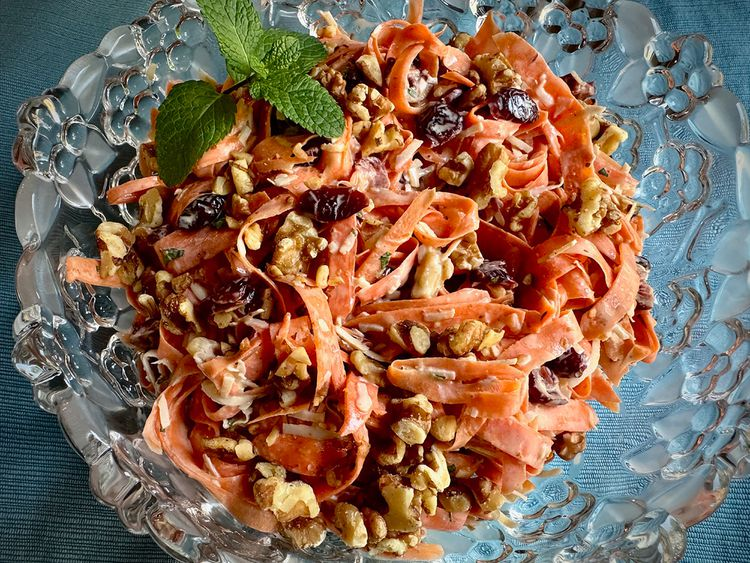

Coconut Cranberry Carrot Ribbon Salad:
Home:

Ingredients:
- 1 cup dried cranberries
- water as needed
- 1/2 cup sour cream
- 1/4 cup frozen orange juice concentrate
- 1/2 lemon, juiced
- 1 pinch salt
- 1 pound carrots, peeled and trimmed
- 1 tablespoon minced fresh mint
- 1 cup sweetened flaked coconut
- 3/4 cup English walnut pieces, lightly toasted
- mint sprig, for garnish (optional)
Steps:
-
Place dried cranberries in a microwave-safe container with enough water to cover.
Microwave on High power, about 2 minutes, then remove from the microwave and allow to stand.
-
For dressing, stir together sour cream, orange juice concentrate, lemon juice,
and salt in a small bowl. Set aside
-
Use a vegetable peeler or a mandoline to slice carrots into thin ribbons,
about 3 inches long, and place ribbons in a large bowl. Add mint, coconut,
walnuts, and carrots. Drain cranberries and add to salad.
-
Pour dressing over salad, and toss to coat ingredients evenly.
Turn salad into a serving dish and garnish with a fresh mint sprig, if desired.